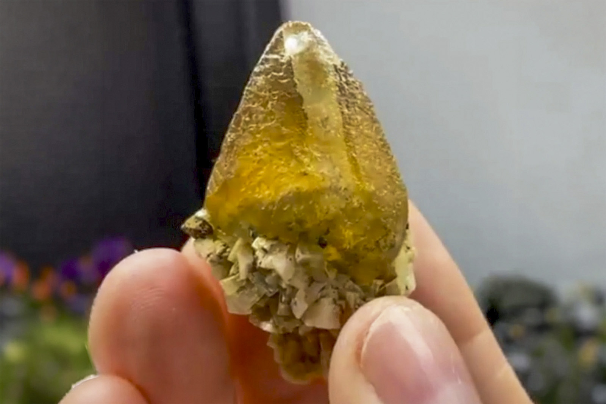

Calcite with Dolomite, Minor Native Copper
"Calcite included with Malachite on Dolomite"
V-09520
Marion County, Arkansas, USA
Purchased 2/19/2026 from Bobby Holley Fine Minerals for $70.00
Inventory • In Collection
Details
Storage Type: Flat
Storage Location: 000 Unassigned
Size class: Miniature (46)
Dimensions: 2.6 × 2.3 × 4.1 cm
Mass: 23.51 g
Luster: Average, Matte